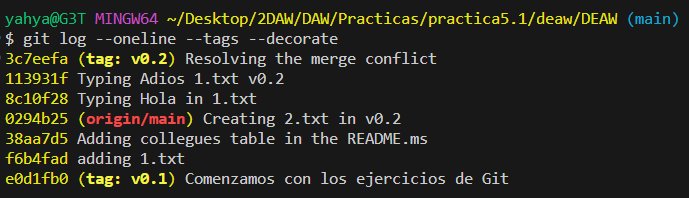
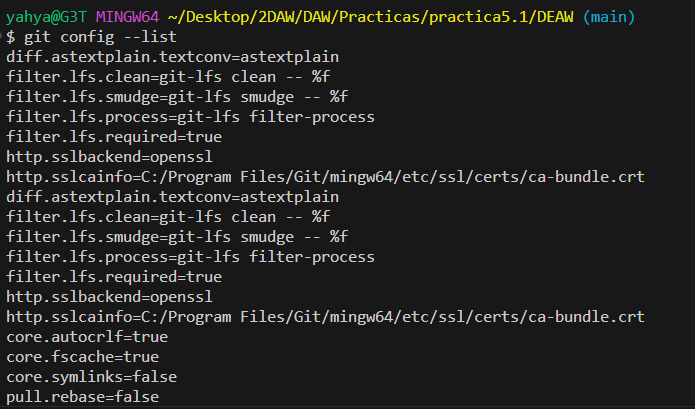

Práctica 4.1: Git & Github
Introducción
En esta práctica, se trabajará con Git y GitHub para aprender y reforzar los conceptos fundamentales del control de versiones, la gestión de ramas
Enunciado ejercicios Git y GitHub
Creacion del repositorio
Creamos el repositorio DEAW en Github

Clonamos el repositorio remoto al local
Creamos un README.md, confirmamos los cambios y los subimos

Creamos la carpeta privada y el archivo privado.txt
Ignorar la carpeta privada y el archivo privado.txt en .gitignore para que no se tengan en cuenta.
Crear un tag con el comando
git tag v0.1
Listamos todos los tags:
git tag
Confirmamos los cambios y los subimos

Cuenta de GitHub
Ponemos una foto de perfil

Activamos el doble factor de autentificación
Uso social de GitHub
Seguir a 2 colegas

Crear una tabla
Creamos la tabla en el REAMDE.md

Colaboradores
Poner a raul-profesor como colaborador

Crear una rama v0.2
Creamos la rama v0.2 y nos posicionamos en ella

Y la subimos al remoto

Merge
Fusionamos la rama v0.2 con main, confirmamos los cambios y los subimos

Merge con conflicto
-
En la rama master poner Hola en el fichero 1.txt y hacer commit.
-
Posicionarse en la rama v0.2 y poner Adios en el fichero "1.txt" y hacer commit.
-
Posicionarse de nuevo en la rama master y hacer un merge con la rama v0.2

Listado de ramas
- Listar las ramas con merge y las ramas sin merge.
--merged: para listar las ramas fusionadas.
--no-merged: para listar las ramas no fusionadas.
Arreglar conflicto
- Arreglar el conflicto anterior y hacer un commit.
Conflicto resuelto

Borrar rama
- Crear un tag v0.2
- Borrar la rama v0.2
Para borrar una rama se usa el comando:
git branch -d <rama>
Y para listar las ramas remotas ejecutamos el comando
git branch -r
Listado de cambios
- Listar los distintos commits con sus ramas y sus tags.

Ejercicios de creación y actualización de repositorios
Ejercicio 1
- Configurar Git definiendo el nombre del usuario, el correo electrónico y activar el coloreado de la salida.

Esta config es local, para que sea global añadimos la opción --global
- Mostrar la configuración final.
Y para listar toda la config ejecutamos el comando:
git config --list

Ejercicio 2
- Crear un repositorio nuevo con el nombre libro y mostrar su contenido.

Ejercicio 3:
-
Comprobar el estado del repositorio.
-
Crear un fichero indice.txt con el siguiente contenido:
Capítulo 1: Introducción a Git
Capítulo 2: Flujo de trabajo básico
Capítulo 3: Repositorios remotos
-
Comprobar de nuevo el estado del repositorio.
-
Añadir el fichero a la zona de intercambio temporal.
-
Volver a comprobar una vez más el estado del repositorio.
Comprobamos el estado del repo
Despues haber cambiado el contenido del index.txt lo agregamos a la zona de intercambio temporal y comprobamos el estado.

Ejercicio 4
- Realizar un commit de los últimos cambios con el mensaje “Añadido índice del libro.” y ver el estado del repositorio.
Ejercicio 5
- Cambiar el fichero indice.txt para que contenga lo siguiente:
Capítulo 1: Introducción a Git
Capítulo 2: Flujo de trabajo básico
Capítulo 3: Gestión de ramas
Capítulo 4: Repositorios remotos
-
Mostrar los cambios con respecto a la última versión guardada en el repositorio.
-
Hacer un commit de los cambios con el mensaje “Añadido capítulo 3 sobre gestión de ramas”.
-
Cambiamos el cotenido de
index.txt. -

Ejercicio 6
-
Mostrar los cambios de la última versión del repositorio con respecto a la anterior.
-
Cambiar el mensaje del último commit por “Añadido capítulo 3 sobre gestión de ramas al índice.”
-
Volver a mostrar los últimos cambios del repositorio.
Ejercicios de manejo del historial de cambios
Ejercicio 1
- Mostrar el historial de cambios del repositorio.

-
Crear la carpeta capitulos y crear dentro de ella el fichero capitulo1.txt con el siguiente texto. `Git es un sistema de control de versiones ideado por Linus Torvalds.
-
Añadir los cambios a la zona de intercambio temporal.
-
Hacer un commit de los cambios con el mensaje “Añadido capítulo 1.” Volver a mostrar el historial de cambios del repositorio.

Ejercicio 2
-
Crear el fichero capitulo2.txt en la carpeta capitulos con el siguiente texto. `El flujo de trabajo básico con Git consiste en: 1- Hacer cambios en el repositorio.
-
Añadir los cambios a la zona de intercambio temporal.
-
Hacer un commit de los cambios con el mensaje “Añadido capítulo 2.”
-
Mostrar las diferencias entre la última versión y dos versiones anteriores.

Ejercicio 3
-
Crear el fichero capitulo3.txt en la carpeta capitulos con el siguiente texto.
Git permite la creación de ramas lo que permite tener distintas versiones del mismo proyecto y trabajar de manera simultanea en ellas. -
Añadir los cambios a la zona de intercambio temporal.
-
Hacer un commit de los cambios con el mensaje “Añadido capítulo 3.”
-
Mostrar las diferencias entre la primera y la última versión del repositorio.

Ejercicio 4
-
Añadir al final del fichero indice.txt la siguiente línea:
Capítulo 5: Conceptos avanzados -
Añadir los cambios a la zona de intercambio temporal.
-
Hacer un commit de los cambios con el mensaje “Añadido capítulo 5 al índice.”.
-
Mostrar quién ha hecho cambios sobre el fichero indice.txt.

Ejercicios de deshacer cambios
Ejercicio 1
- Eliminar la última línea del fichero
indice.txty guardarlo. - Comprobar el estado del repositorio.
- Deshacer los cambios realizados en el fichero
indice.txtpara volver a la versión anterior del fichero. - Volver a comprobar el estado del repositorio.

Ejercicio 2
- Eliminar la última línea del fichero
indice.txty guardarlo. - Añadir los cambios a la zona de intercambio temporal.
- Comprobar de nuevo el estado del repositorio.
- Quitar los cambios de la zona de intercambio temporal, pero mantenerlos en el directorio de trabajo.
- Comprobar de nuevo el estado del repositorio.
- Deshacer los cambios realizados en el fichero
indice.txtpara volver a la versión anterior del fichero. - Volver a comprobar el estado del repositorio.

Ejercicio 3
- Eliminar la última línea del fichero
indice.txty guardarlo. - Eliminar el fichero
capitulos/capitulo3.txt. - Añadir un fichero nuevo
capitulos/capitulo4.txtvacío. - Añadir los cambios a la zona de intercambio temporal.
- Comprobar de nuevo el estado del repositorio.
- Quitar los cambios de la zona de intercambio temporal, pero mantenerlos en el directorio de trabajo.
- Comprobar de nuevo el estado del repositorio.
- Deshacer los cambios realizados para volver a la versión del repositorio.
- Volver a comprobar el estado del repositorio.

Ejercicio 4
- Eliminar la última línea del fichero
indice.txty guardarlo. - Eliminar el fichero
capitulos/capitulo3.txt. - Añadir los cambios a la zona de intercambio temporal y hacer un commit con el mensaje "Borrado accidental."
- Comprobar el historial del repositorio.
- Deshacer el último commit pero mantener los cambios anteriores en el directorio de trabajo y la zona de intercambio temporal.

- Comprobar el historial y el estado del repositorio.
- Volver a hacer el commit con el mismo mensaje de antes.
- Deshacer el último commit y los cambios anteriores del directorio de trabajo volviendo a la versión anterior del repositorio.
- Comprobar de nuevo el historial y el estado del repositorio.

Ejercicios de gestión de ramas
Ejercicio 1
- Crear una nueva rama
bibliografiay mostrar las ramas del repositorio.
Ejercicio 2
- Crear el fichero
capitulos/capitulo4.txty añadir el texto siguiente:
En este capítulo veremos cómo usar GitHub para alojar repositorios en remoto.
- Añadir los cambios a la zona de intercambio temporal.
- Hacer un commit con el mensaje "Añadido capítulo 4."
- Mostrar la historia del repositorio incluyendo todas las ramas.
Ejercicio 3
- Cambiar a la rama
bibliografia. - Crear el fichero
bibliografia.txty añadir la siguiente referencia:
Chacon, S. and Straub, B. Pro Git. Apress.
- Añadir los cambios a la zona de intercambio temporal.
- Hacer un commit con el mensaje "Añadida primera referencia bibliográfica."
- Mostrar la historia del repositorio incluyendo todas las ramas.
Ejercicio 4
- Fusionar la rama
bibliografiacon la ramamaster. - Mostrar la historia del repositorio incluyendo todas las ramas.
- Eliminar la rama
bibliografia. - Mostrar de nuevo la historia del repositorio incluyendo todas las ramas.
Ejercicio 5
- Crear la rama
bibliografia. - Cambiar a la rama
bibliografia. - Cambiar el fichero
bibliografia.txtpara que contenga las siguientes referencias:
Scott Chacon and Ben Straub. Pro Git. Apress.
Ryan Hodson. Ry’s Git Tutorial. Smashwords (2014)
- Añadir los cambios a la zona de intercambio temporal y hacer un commit con el mensaje "Añadida nueva referencia bibliográfica."
- Cambiar a la rama
master. - Cambiar el fichero
bibliografia.txtpara que contenga las siguientes referencias:
Chacon, S. and Straub, B. Pro Git. Apress.
Loeliger, J. and McCullough, M. Version control with Git. O’Reilly.
- Añadir los cambios a la zona de intercambio temporal y hacer un commit con el mensaje "Añadida nueva referencia bibliográfica."
- Fusionar la rama
bibliografiacon la ramamaster. - Resolver el conflicto dejando el fichero
bibliografia.txtcon las referencias:
Chacon, S. and Straub, B. Pro Git. Apress.
Loeliger, J. and McCullough, M. Version control with Git. O’Reilly.
Hodson, R. Ry’s Git Tutorial. Smashwords (2014)
- Añadir los cambios a la zona de intercambio temporal y hacer un commit con el mensaje "Resuelto conflicto de bibliografía."
- Mostrar la historia del repositorio incluyendo todas las ramas.

Ejercicios de repositorios remotos
Ejercicio 1
- Crear un nuevo repositorio público en GitHub con el nombre
libro-git. - Añadirlo al repositorio local del libro.
- Mostrar todos los repositorios remotos configurados.

Ejercicio 2
- Añadir los cambios del repositorio local al repositorio remoto de GitHub.
- Acceder a GitHub y comprobar que se han subido los cambios mostrando el historial de versiones.
Ejercicio 3
- Colaborar en el repositorio remoto
libro-gitde otro usuario. - Clonar su repositorio
libro-git. - Añadir el fichero
autores.txtque contenga el nombre del usuario y su correo electrónico.
Nombre del usuario - usuario@example.com
- Añadir los cambios a la zona de intercambio temporal.
- Hacer un commit con el mensaje "Añadido autor."
- Subir los cambios al repositorio remoto.

Ejercicio 4
- Hacer una bifurcación del repositorio remoto
asalber/libro-giten GitHub.
Una bifurcación (fork) es una copia de un repositorio que se crea en tu propia cuenta de GitHub. Esto permite hacer cambios sin afectar el repositorio original.
- Clonar el repositorio creado en la cuenta de GitHub del usuario.
- Crear una nueva rama
autoriay activarla. - Añadir el nombre del usuario y su correo al fichero
autores.txt.
Nombre del usuario - usuario@example.com
- Añadir los cambios a la zona de intercambio temporal.
- Hacer un commit con el mensaje "Añadido nuevo autor."
- Subir los cambios de la rama
autoriaal repositorio remoto en GitHub.

- Hacer un Pull Request de los cambios en la rama
autoria.
Pull Request es una forma de solicitar que el propietario de un proyecto incorpore los cambios realizados en una rama específica al repositorio principal